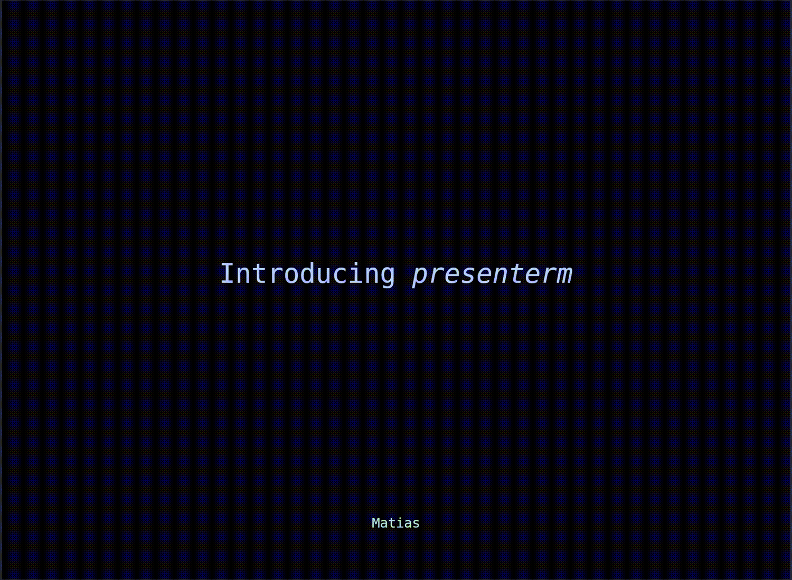
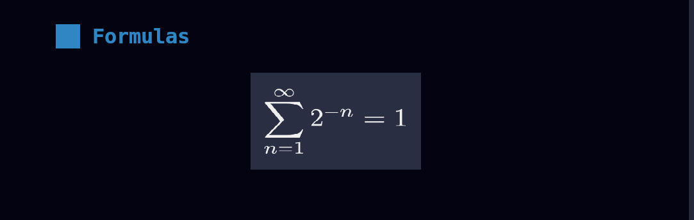

presenterm
presenterm lets you create presentations in markdown format and run them from your terminal, with support for image and animated gif support, highly customizable themes, code highlighting, exporting presentations into PDF format, and plenty of other features.
Demo
This is how the demo presentation looks like:

A few other example presentations can be found here.
Installing presenterm
presenterm works on Linux, macOS, and Windows and can be installed in different ways:
Binary
The recommended way to install presenterm is to download the latest pre-built version for your system from the releases page.
cargo-binstall
If you're a cargo-binstall user:
cargo binstall presenterm
From source
Alternatively, build from source by downloading rust and running:
cargo install --locked presenterm
Latest unreleased version
The latest unreleased version can be installed either in binary form or by building it from source.
Binary
The nightly pre-build binary can be downloaded from github. Keep in mind this is built once a day at midnight UTC so if you need code that has been recently merged you may have to wait a few hours.
From source
cargo install --locked --git https://github.com/mfontanini/presenterm
Community maintained packages
The community maintains packages for various operating systems and linux distributions and can be installed in the following ways:
macOS
Install the latest version in macOS via brew by running:
brew install presenterm
The latest unreleased version can be built via brew by running:
brew install --head presenterm
Nix
To install presenterm using the Nix package manager run:
nix-env -iA nixos.presenterm # for nixos
nix-env -iA nixpkgs.presenterm # for non-nixos
NixOS
Add the following to your configuration.nix if you are on NixOS
environment.systemPackages = [
pkgs.presenterm
];
Flakes
Alternatively if you're a Nix user using flakes you can run:
nix run nixpkgs#presenterm # to run from nixpkgs
nix run github:mfontanini/presenterm # to run from github repo
For more information see nixpkgs.
Arch Linux
presenterm is available in the official repositories. You can use pacman to install as follows:
pacman -S presenterm
Binary
Alternatively, you can use any AUR helper to install the upstream binaries:
paru/yay -S presenterm-bin
From source
paru/yay -S presenterm-git
Windows
Scoop
Install the latest version via scoop by running:
scoop install main/presenterm
Winget
Alternatively, you can install via WinGet by running:
winget install --id=mfontanini.presenterm -e
Introduction
This guide teaches you how to use presenterm. At this point you should have already installed presenterm, otherwise visit the installation guide to get started.
Quick start
Download the demo presentation and run it using:
git clone https://github.com/mfontanini/presenterm.git
cd presenterm
presenterm examples/demo.md
Presentations
A presentation in presenterm is a single markdown file. Every slide in the presentation file is delimited by a line that contains a single HTML comment:
<!-- end_slide -->
Presentations can contain most commonly used markdown elements such as ordered and unordered lists, headings, formatted
text (bold, italics, strikethrough, inline code, etc), code blocks, block quotes, tables, etc.
Introduction slide
By setting a front matter at the beginning of your presentation you can configure the title, sub title, author and other metadata about your presentation. Doing so will cause presenterm to create an introduction slide:
---
title: "My _first_ **presentation**"
sub_title: (in presenterm!)
author: Myself
---
All of these attributes are optional and should be avoided if an introduction slide is not needed. Note that the title
key can contain arbitrary markdown so you can use bold, italics, <span> tags, etc.
Multiple authors
If you're creating a presentation in which there's multiple authors, you can use the authors key instead of author
and list them all this way:
---
title: Our first presentation
authors:
- Me
- You
---
Slide titles
Any setext header will be considered to be a slide title and will be rendered in a more slide-title-looking way. By default this means it will be centered, some vertical padding will be added and the text color will be different.
Hello
===
note
See the themes section on how to customize the looks of slide titles and any other element in a presentation.
Ending slides
While other applications use a thematic break (---) to mark the end of a slide, presenterm uses a special
end_slide HTML comment:
<!-- end_slide -->
This makes the end of a slide more explicit and easy to spot while you're editing your presentation. See the configuration if you want to customize this behavior.
If you really would prefer to use thematic breaks (---) to delimit slides, you can do that by enabling the
end_slide_shorthand options.
Colored text
span HTML tags can be used to provide foreground and/or background colors to text. There's currently two ways to
specify colors:
- Via the
styleattribute, in which only the CSS attributescolorandbackground-colorcan be used to set the foreground and background colors respectively. Colors used in both CSS attributes can refer to theme palette colors by using thepalette:<name>orp:<namesyntaxes. - Via the
classattribute, which must point to a class defined in the theme palette. Classes allow configuring foreground/background color combinations to be used across your presentation.
For example, the following will use ff0000 as the foreground color and whatever the active theme's palette defines as
foo:
<span style="color: #ff0000; background-color: palette:foo">colored text!</span>
Alternatively, can you can define a class that contains a foreground/background color combination in your theme's palette and use it:
<span class="my_class">colored text!</span>
note
Keep in mind only span tags are supported.
Font sizes
The kitty terminal added in version 0.40.0 support for a new protocol that allows TUIs to specify the font size to be used when printing text. presenterm is one of the first applications supports this protocol in various places:
- Themes can specify it in the presentation title in the introduction slide, in slide titles, and in headers by using
the
font_sizeproperty. All built in themes currently set font size to 2 (1 is the default) for these elements. - Explicitly by using the
font_sizecomment command:
# Normal text
<!-- font_size: 2 -->
# Larger text
Terminal support for this feature is verified when presenterm starts and any attempt to change the font size, be it via the theme or via the comment command, will be ignored if it's not supported.
Key bindings
Navigation within a presentation should be intuitive: jumping to the next/previous slide can be done by using the arrow keys, hjkl, and page up/down keys.
Besides this:
- Jumping to the first slide:
gg. - Jumping to the last slide:
G. - Jumping to a specific slide:
<slide-number>G. - Exit the presentation:
<ctrl>c.
You can check all the configured keybindings by pressing ? while running presenterm.
Configuring key bindings
If you don't like the default key bindings, you can override them in the configuration file.
Modals
presenterm currently has 2 modals that can provide some information while running the application. Modals can be toggled using some key combination and can be hidden using the escape key by default, but these can be configured via the configuration file key bindings.
Slide index modal
This modal can be toggled by default using control+p and lets you see an index that contains a row for every slide in
the presentation, including its title and slide index. This allows you to find a slide you're trying to jump to
quicklier rather than scanning through each of them.

Key bindings modal
The key bindings modal displays the key bindings for each of the supported actions and can be opened by pressing ?.
Hot reload
Unless you run in presentation mode by passing in the --present parameter, presenterm will automatically reload your
presentation file every time you save it. presenterm will also automatically detect which specific slide was modified
and jump to it so you don't have to be jumping back and forth between the source markdown and the presentation to see
how the changes look like.

Images
Images are supported and will render in your terminal as long as it supports either the iterm2 image protocol, the kitty graphics protocol, or sixel. Some of the terminals where at least one of these is supported are:
Things you should know when using image tags in your presentation's markdown are:
- Image paths are relative to your presentation path. That is a tag like
will be looked up at$PRESENTATION_DIRECTORY/food/potato.png. - Images will be rendered by default in their original size. That is, if your terminal is 300x200px and your image is 200x100px, it will take up 66% of your horizontal space and 50% of your vertical space.
- The exception to the point above is if the image does not fit in your terminal, it will be resized accordingly while preserving the aspect ratio.
- If your terminal does not support any of the graphics protocol above, images will be rendered using ascii blocks. It ain't great but it's something!
- Remote images are not supported by design.
tmux
If you're using tmux, you will need to enable the allow-passthrough option for images to work correctly.
Image size
The size of each image can be set by using the image:width or image:w attributes in the image tag. For example, the
following will cause the image to take up 50% of the terminal width:

The image will always be scaled to preserve its aspect ratio and it will not be allowed to overflow vertically nor horizontally.
Protocol detection
By default the image protocol to be used will be automatically detected. In cases where this detection fails, you can
set it manually via the --image-protocol parameter or by setting it in the config
file.
Comment commands
presenterm uses "comment commands" in the form of HTML comments to let the user specify certain behaviors that can't be specified by vanilla markdown.
Pauses
Pauses allow the sections of the content in your slide to only show up when you advance in your presentation. That is,
only after you press, say, the right arrow will a section of the slide show up. This can be done by the pause comment
command:
<!-- pause -->
Font size
The font size can be changed by using the font_size command:
<!-- font_size: 2 -->
This causes the remainder of the slide to use the font size specified. The font size can range from 1 to 7, 1 being the default.
note
This is currently only supported in the kitty terminal and only as of version 0.40.0. See the notes on font sizes on the introduction page for more information on this.
Jumping to the vertical center
The command jump_to_middle lets you jump to the middle of the page vertically. This is useful in combination
with slide titles to create separator slides:
blablabla
<!-- end_slide -->
<!-- jump_to_middle -->
Farming potatoes
===
<!-- end_slide -->
This will create a slide with the text "Farming potatoes" in the center, rendered using the slide title style.
Explicit new lines
The newline/new_line and newlines/new_lines commands allow you to explicitly create new lines. Because markdown
ignores multiple line breaks in a row, this is useful to create some spacing where necessary:
hi
<!-- new_lines: 10 -->
mom
<!-- new_line -->
bye
Incremental lists
Using <!-- pause --> in between each bullet point a list is a bit tedious so instead you can use the
incremental_lists command to tell presenterm that until the end of the current slide you want each individual
bullet point to appear only after you move to the next slide:
<!-- incremental_lists: true -->
* this
* appears
* one after
* the other
<!-- incremental_lists: false -->
* this appears
* all at once
Number of lines in between list items
The list_item_newlines option lets you configure the number of new lines in between list items in the remainder of a
slide. This can be helpful to "unpack" a list that only has a few entries and you want it to take up more space in a
slide. This can also be configured for all lists via the options.list_item_newlines
option.
<!-- list_item_newlines: 2 -->
* this
* is
* more
* spaced
Including external markdown files
By using the include command you can include the contents of an external markdown file as if it was part of the
original presentation file:
<!-- include: foo.md -->
Any files referenced by an included file will have their paths relative to that path. e.g. if you include foo/bar.md
and that file contains an image tar.png, that image will be looked up in foo/tar.png.
No footer
If you don't want the footer to show up in some particular slide for some reason, you can use the no_footer command:
<!-- no_footer -->
Skip slide
If you don't want a specific slide to be included in the presentation use the skip_slide command:
<!-- skip_slide -->
Text alignment
The text alignment for the remainder of the slide can be configured via the alignment command, which can use values:
left, center, and right:
<!-- alignment: left -->
left alignment, the default
<!-- alignment: center -->
centered
<!-- alignment: right -->
right aligned
User comments
User comments such as personal notes, TODOs, and other documentation that will be ignored during presentation rendering can be added using these formats:
<!-- // This is a user comment -->
<!-- comment: This is also a user comment which won't be rendered -->
These comments are completely invisible during presentation and useful for:
- Personal notes and reminders
- TODO items and planning notes
- Source references and attribution
Listing available comment commands
The --list-comment-commands CLI option outputs all available comment commands to stdout, making it easy to discover and use them in external tools and editors.
Purpose
This feature is designed to:
- Provide a machine-readable list of all comment commands
- Enable editor integrations for autocompletion and snippets
- Allow validation of comment commands in external tools
- Serve as a quick reference without consulting documentation
Usage
# List all available comment commands
presenterm --list-comment-commands
# Use with fzf for interactive selection
presenterm --list-comment-commands | fzf
# Pipe to grep to filter specific commands
presenterm --list-comment-commands | grep alignment
Output format
Each command is output on a separate line with appropriate default values where applicable:
<!-- pause -->
<!-- end_slide -->
<!-- new_line -->
<!-- new_lines: 2 -->
<!-- jump_to_middle -->
<!-- column_layout: [1, 2] -->
<!-- column: 0 -->
<!-- reset_layout -->
<!-- incremental_lists: true -->
<!-- incremental_lists: false -->
<!-- no_footer -->
<!-- font_size: 2 -->
<!-- alignment: left -->
<!-- alignment: center -->
<!-- alignment: right -->
<!-- skip_slide -->
<!-- list_item_newlines: 2 -->
<!-- include: file.md -->
<!-- speaker_note: Your note here -->
<!-- snippet_output: identifier -->
Editor integration example: Vim
For Vim users with fzf.vim installed, you can add this to your .vimrc to enable quick insertion of comment commands:
" Presenterm comment command helper
if executable('presenterm') && executable('fzf')
inoremap <expr> <c-k> fzf#vim#complete(fzf#wrap({
\ 'source': 'presenterm --list-comment-commands',
\ 'options': '--header "Comment Command Selection" --no-hscroll',
\ 'reducer': { lines -> lines[0] } }))
endif
With this configuration, pressing Ctrl+K in insert mode will open an fzf picker with all available comment commands, allowing you to quickly select and insert them into your presentation.
Layouts
presenterm currently supports a column layout that lets you split parts of your slides into column. This allows you to put text on one side, and code/images on the other, or really organize markdown into columns in any way you want.
This is done by using commands, just like pause and end_slide, in the form of HTML comments. This section describes
how to use those.
Wait, why not HTML?
While markdown can contain HTML tags (beyond comments!) and we could represent this using divs with alignment, I don't really want to:
- Deal with HTML and all the implications this would have. e.g. nesting many divs together and all the chaos that would bring to the rendering code.
- Require people to write HTML when we have such a narrow use-case for it here: we only want column layouts.
Because of this, presenterm doesn't let you use HTML and instead has a custom way of specifying column layouts.
Column layout
The way to specify column layouts is by first creating a layout, and then telling presenterm you want to enter each of the column in it as you write your presentation.
Defining layouts
Defining a layout is done via the column_layout command, in the form of an HTML comment:
<!-- column_layout: [3, 2] -->
This defines a layout with 2 columns where:
- The total number of "size units" is
3 + 2 = 5. You can think of this as the terminal screen being split into 5 pieces vertically. - The first column takes 3 out of those 5 pieces/units, or in other words 60% of the terminal screen.
- The second column takes 2 out of those 5 pieces/units, or in other words 40% of the terminal screen.
You can use any number of columns and with as many units you want on each of them. This lets you decide how to structure the presentation in a fairly straightforward way.
Using columns
Once a layout is defined, you just need to specify that you want to enter a column before writing any text to it by
using the column command:
<!-- column: 0 -->
Now all the markdown you write will be placed on the first column until you either:
- Reset the layout by using the
reset_layoutcommand. - The slide ends.
- You jump into another column by using the
columncommand again.
Example
The following example puts all of this together by defining 2 columns, one with some code and bullet points, another one with an image, and some extra text at the bottom that's not tied to any columns.
Layout example
==============
<!-- column_layout: [2, 1] -->
<!-- column: 0 -->
This is some code I like:
```rust
fn potato() -> u32 {
42
}
```
Things I like about it:
1. Potato
2. Rust
3. The image on the right
<!-- column: 1 -->

_Picture by Alexis Bailey / CC BY-NC 4.0_
<!-- reset_layout -->
Because we just reset the layout, this text is now below both of the columns.
This would render the following way:

Other uses
Besides organizing your slides into columns, you can use column layouts to center a piece of your slide. For example, if
you want a certain portion of your slide to be centered, you could define a column layout like [1, 3, 1] and then only
write content into the middle column. This would make your content take up the center 60% of the screen.
Code highlighting
Code highlighting is supported for the following languages:
| Language | Execution support |
|---|---|
| ada | |
| asp | |
| awk | |
| bash | |
| batchfile | |
| C | |
| cmake | |
| crontab | |
| C# | |
| clojure | |
| C++ | |
| CSS | |
| D | |
| diff | |
| docker | |
| dotenv | |
| elixir | |
| elm | |
| erlang | |
| fish | |
| F# | |
| go | |
| haskell | |
| HTML | |
| java | |
| javascript | |
| json | |
| julia | |
| kotlin | |
| latex | |
| lua | |
| makefile | |
| markdown | |
| nix | |
| ocaml | |
| perl | |
| php | |
| protobuf | |
| puppet | |
| python | |
| R | |
| ruby | |
| rust | |
| scala | |
| shell | |
| sql | |
| swift | |
| svelte | |
| tcl | |
| toml | |
| terraform | |
| typescript | |
| xml | |
| yaml | |
| vue | |
| zig | |
| zsh |
Other languages that are supported are:
- nushell, for which highlighting isn't supported but execution is.
If there's a language that is not in this list and you would like it to be supported, please create an issue. If you'd also like code execution support, provide details on how to compile (if necessary) and run snippets for that language. You can also configure how to run code snippet for a language locally in your config file.
Enabling line numbers
If you would like line numbers to be shown on the left of a code block use the +line_numbers switch after specifying
the language in a code block:
```rust +line_numbers
fn hello_world() {
println!("Hello world");
}
```
Selective highlighting
By default, the entire code block will be syntax-highlighted. If instead you only wanted a subset of it to be highlighted, you can use braces and a list of either individual lines, or line ranges that you'd want to highlight.
```rust {1,3,5-7}
fn potato() -> u32 { // 1: highlighted
// 2: not highlighted
println!("Hello world"); // 3: highlighted
let mut q = 42; // 4: not highlighted
q = q * 1337; // 5: highlighted
q // 6: highlighted
} // 7: highlighted
```
Dynamic highlighting
Similar to the syntax used for selective highlighting, dynamic highlighting will change which lines of the code in a code block are highlighted every time you move to the next/previous slide.
This is achieved by using the separator | to indicate what sections of the code will be highlighted at a given time.
You can also use all to highlight all lines for a particular frame.
```rust {1,3|5-7}
fn potato() -> u32 {
println!("Hello world");
let mut q = 42;
q = q * 1337;
q
}
```
In this example, lines 1 and 3 will be highlighted initially. Then once you press a key to move to the next slide, lines 1 and 3 will no longer be highlighted and instead lines 5 through 7 will. This allows you to create more dynamic presentations where you can display sections of the code to explain something specific about each of them.
See this real example of how this looks like.

Including external code snippets
The file snippet type can be used to specify an external code snippet that will be included and highlighted as usual.
```file +exec +line_numbers
path: snippet.rs
language: rust
```
If you'd like to include only a subset of the file, you can use the optional fields start_line and end_line:
```file +exec +line_numbers
path: snippet.rs
language: rust
# Only show lines 5-10
start_line: 5
end_line: 10
```
Showing a snippet without a background
Using the +no_background flag will cause the snippet to have no background. This is useful when combining it with the
+exec_replace flag described further down.
Adding highlighting syntaxes for new languages
presenterm uses the syntaxes supported by bat to highlight code snippets, so any languages supported by bat natively can be added to presenterm easily. Please create a ticket or use this as a reference to submit a pull request to make a syntax officially supported by presenterm as well.
If a language isn't natively supported by bat but you'd like to use it, you can follow this guide in the bat docs and invoke bat directly in a presentation:
```bash +exec_replace
bat --color always script.py
```
note
Check the code execution docs for more details on how to allow the tool to run
exec_replace blocks.
Snippet execution
Executing code blocks
Annotating a code block with a +exec attribute will make it executable. Pressing control+e when viewing a slide that
contains an executable block, the code in the snippet will be executed and the output of the execution will be displayed
on a box below it. The code execution is stateful so if you switch to another slide and then go back, you will still see
the output.
```bash +exec
echo hello world
```
Code execution must be explicitly enabled by using either:
- The
-xcommand line parameter when running presenterm. - Setting the
snippet.exec.enableproperty totruein your presenterm config file.
Refer to the table in the highlighting page for the list of languages for which code execution is supported.

warning
Run code in presentations at your own risk! Especially if you're running someone else's presentation. Don't blindly enable snippet execution!
Output placing
By default a snippet's output will always show up right below the snippet. However, if you wanted to show the output in a different place in a slide (e.g. another column) or even in another slide you can do this by:
- Defining a snippet's identifier:
```bash +exec +id:foo
echo hellow world
```
- Referencing that identifier where you want the output to appear by using the
snippet_outputcomment command:
<!-- snippet_output: foo -->
A single snippet can be referenced multiple times in multiple slides, as long as the slide you're referencing it in
comes after the snippet. The snippet will only be executed once, and every snippet_output command will display that
single execution's output.
Validating snippets
While you're developing your presentation you probably want to make sure the executable snippets you write in it are
correct and don't contain any syntax errors. While you can do this by constantly pressing <c-e> every time you change
a snippet, this is automatically done by presenterm if you pass in the --validate-snippets flag.
When you pass in this flag, presenterm will:
- Automatically run all
+exec,+exec_replace, and+validatesnippets as soon as your presentation starts. Note that the+validateflag is a special one that doesn't make a snippet executable but still validates it by running it during development. - Report an error if any of the snippets returns an exit code other than 0.
- Re-run all snippets
+execand+exec_replacesnippets every time the presentation is reloaded.
In case you expect a snippet to return an exit code other than 0, you can use the +expect:failure flag. This will
cause presenterm to display an error if the snippet does not fail.
For example, the following defines a snippet that's not executable but that will be validated if --validate-snippets
is passed in and will display an error if the snippet does not fail.
fn main() { let q = 42; let w = q + "foo"; // oops }
Executing and replacing
Similar to +exec, +exec_replace causes a snippet to be executable but:
- Execution happens automatically without user intervention.
- The snippet will be automatically replaced with its execution output.
This can be useful to run programs that generate some form of ASCII art that you'd like to generate dynamically.

Because of the risk involved in +exec_replace, where code gets automatically executed when running a presentation,
this requires users to explicitly opt in to it. This can be done by either passing in the -X command line parameter
or setting the snippet.exec_replace.enable flag in your configuration file to true.
Alternative executors
Some languages support alternative executors. For example, rust code can be ran via
rust-script, which allows you to use external crates. These executors can be used by
specifying :<executor-name> after +exec or +exec_replace.
For example, the following rust snippet will be executed using rust-script:
```rust +exec:rust-script
# //! ```cargo
# //! [dependencies]
# //! time = "0.1.25"
# //! ```
# // The lines above will be hidden
fn main() {
println!("the time is {}", time::now().rfc822z());
}
```
The supported alternative executors are:
rust-scriptforrustsnippets.pytestanduvforpythonsnippets.
Code to image conversions
The +image attribute behaves like +exec_replace but also assumes the output of the executed snippet will be an
image, and it will render it as such. For this to work, the code must only emit an image in jpg/png formats and
nothing else.
For example, this would render the demo presentation's image:
```bash +image
cat examples/doge.png
```
This attribute carries the same risks as +exec_replace and therefore needs to be enabled via the same flags.
Executing snippets that need a TTY
If you're trying to execute a program like top that needs to run on a TTY as it renders text, clears the screen, etc,
you can use the +acquire_terminal modifier on a code already marked as executable with +exec. Executing snippets
tagged with these two attributes will cause presenterm to suspend execution, the snippet will be invoked giving it the
raw terminal to do whatever it needs, and upon its completion presenterm will resume its execution.

Styled execution output
Snippets that generate output which contains escape codes that change the colors or styling of the text will be parsed and displayed respecting those styles. Do note that you may need to force certain tools to use colored output as they will likely not use it by default.
For example, to get colored output when invoking ls you can use:
```bash +exec
ls /tmp --color=always
```
The parameter or way to enable this will depend on the tool being invoked.
Hiding code lines
When you mark a code snippet as executable via the +exec flag, you may not be interested in showing all the lines to
your audience, as some of them may not be necessary to convey your point. For example, you may want to hide imports,
non-essential functions, initialization of certain variables, etc. For this purpose, presenterm supports a prefix
under certain programming languages that let you indicate a line should be executed when running the code but should not
be displayed in the presentation.
For example, in the following code snippet only the print statement will be displayed but the entire snippet will be ran:
```rust
# fn main() {
println!("Hello world!");
# }
```
Rather than blindly relying on a prefix that may have a meaning in a language, prefixes are chosen on a per language basis. The languages that are supported and their prefix is:
- rust:
#. - python/bash/fish/shell/zsh/kotlin/java/javascript/typescript/c/c++/go:
///.
This means that any line in a rust code snippet that starts with # will be hidden, whereas all lines in, say, a
golang code snippet that starts with a /// will be hidden.
Pre-rendering
Some languages support pre-rendering. This means the code block is transformed into something else when the presentation
is loaded. The languages that currently support this are mermaid, LaTeX, and typst where the contents of the code
block is transformed into an image, allowing you to define formulas as text in your presentation. This can be done by
using the +render attribute on a code block.
See the LaTeX and typst, mermaid, and d2 docs for more information.
Mermaid
mermaid snippets can be converted into images automatically in any code snippet tagged with
the mermaid language and a +render tag:
```mermaid +render
sequenceDiagram
Mark --> Bob: Hello!
Bob --> Mark: Oh, hi mark!
```
This requires having mermaid-cli installed.
Note that because the mermaid CLI will spin up a browser under the hood, this may not work in all environments and can also be a bit slow (e.g. ~2 seconds to generate every image). Mermaid graphs are rendered asynchronously by a number of threads that can be configured in the configuration file. This configuration value currently defaults to 2.
The size of the rendered image can be configured by changing:
- The
mermaid.scaleconfiguration parameter. - Using the
+width:<number>%attribute in the code snippet.
For example, this diagram will take up 50% of the width of the window and will preserve its aspect ratio:
```mermaid +render +width:50%
sequenceDiagram
Mark --> Bob: Hello!
Bob --> Mark: Oh, hi mark!
```
It is recommended to change the mermaid.scale parameter until images look big enough and then adjust on an image by
image case if necessary using the +width attribute. Otherwise, using a small scale and then scaling via +width may
cause the image to become blurry.
Theme
The theme of the rendered mermaid diagrams can be changed through the following theme parameters:
mermaid.backgroundthe background color passed to the CLI (e.g.,transparent,red,#F0F0F0).mermaid.themethe mermaid theme to use.
Always render diagrams
If you don't want to use +render every time, you can configure which languages get this automatically via the config
file.
LaTeX and typst
latex and typst code blocks can be marked with the +render attribute (see highlighting) to have
them rendered into images when the presentation is loaded. This allows you to define formulas in text rather than having
to define them somewhere else, transform them into an image, and them embed it.
For example, the following presentation:
# Formulas
```latex +render
\[ \sum_{n=1}^{\infty} 2^{-n} = 1 \]
```
Would be rendered like this:

Dependencies
typst
The engine used to render both of these languages is typst. typst is easy to install, lightweight, and boilerplate free as compared to LaTeX.
pandoc
For LaTeX code rendering both typst and pandoc are required. How this works is the LaTeX code you write gets transformed into typst code via pandoc and then rendered by using typst. This lets us:
- Have the same look/feel on generated formulas for both languages.
- Avoid having to write lots of boilerplate LaTeX to make rendering for that language work.
- Have the same logic to render formulas for both languages, except with a small preparation step for LaTeX.
Controlling PPI
presenterm lets you define how many Pixels Per Inch (PPI) you want in the generated images. This is important because as opposed to images that you manually include in your presentation, where you control the exact dimensions, the images generated on the fly will have a fixed size. Configuring the PPI used during the conversion can let you adjust this: the higher the PPI, the larger the generated images will be.
Because as opposed to most configurations this is a very environment-specific config, the PPI parameter is not part of the theme definition but is instead has to be set in presenterm's config file:
typst:
ppi: 400
The default is 300 so adjust it and see what works for you.
Image paths
If you're including an image inside a typst snippet, you must:
- Use absolute paths, e.g.
#image("/image1.png"). - Place the image in the same or a sub path of the path where the presentation is. That is, if your presentation file is
at
/tmp/foo/presentation.md, you can place images in/tmp/foo, and/tmp/foo/barbut not under/tmp/bar. This is because of the absolute path rule above: the path will be considered to be relative to the presentation file's directory.
Controlling the image size
You can also set the generated image's size on a per code snippet basis by using the +width modifier which specifies
the width of the image as a percentage of the terminal size.
```typst +render +width:50%
$f(x) = x + 1$
```
Customizations
The colors and margin of the generated images can be defined in your theme:
typst:
colors:
background: ff0000
foreground: 00ff00
# In points
horizontal_margin: 2
vertical_margin: 2
D2
D2 snippets can be converted into images automatically for any snippets tagged with the d2
language and using a +render attribute:
```d2 +render
my_table: {
shape: sql_table
id: int {constraint: primary_key}
last_updated: timestamp with time zone
}
```
This requires having d2 installed.
Similar to mermaid diagrams support, d2 diagrams:
- Will take some time because of how slow the d2 tool is.
- Can be scaled by using a
+width:<number>%attribute in the snippet or by setting thed2.scaleproperty in the config file, which is passed along to the--scaleparameter to the d2 CLI.
Theme
The theme of the rendered d2 diagrams can be changed through the d2.theme theme
parameter. See the available themes in the d2 docs.
Themes
presenterm tries to be as configurable as possible, allowing users to create presentations that look exactly how they want them to look like. The tool ships with a set of built-in themes but users can be created by users in their local setup and imported in their presentations.
Setting themes
There's various ways of setting the theme you want in your presentation:
CLI
Passing in the --theme parameter when running presenterm to select one of the built-in themes.
Within the presentation
The presentation's markdown file can contain a front matter that specifies the theme to use. This comes in 3 flavors:
By name
Using a built-in theme name makes your presentation use that one regardless of what the default or what the --theme
option specifies:
---
theme:
name: dark
---
By path
You can define a theme file in yaml format somewhere in your filesystem and reference it within the presentation:
---
theme:
path: /home/me/Documents/epic-theme.yaml
---
Overrides
You can partially/completely override the theme in use from within the presentation:
---
theme:
override:
default:
colors:
foreground: "beeeff"
---
This lets you:
- Create a unique style for your presentation without having to go through the process of taking an existing theme, copying somewhere, and changing it when you only expect to use it for that one presentation.
- Iterate quickly on styles given overrides are reloaded whenever you save your presentation file.
Built-in themes
A few built-in themes are bundled with the application binary, meaning you don't need to have any external files available to use them. These are packed as part of the build process as a binary blob and are decoded on demand only when used.
Currently, the following themes are supported:
- A set of themes based on the catppuccin color palette:
catppuccin-lattecatppuccin-frappecatppuccin-macchiatocatppuccin-mocha
dark: A dark theme.gruvbox-dark: A theme inspired by the colors used in gruvbox.light: A light theme.terminal-dark: A theme that uses your terminals color and looks best if your terminal uses a dark color scheme. This means if your terminal background is e.g. transparent, or uses an image, the presentation will inherit that.terminal-light: The same asterminal-darkbut works best if your terminal uses a light color scheme.tokyonight-storm: A theme inspired by the colors used in toyonight.
Trying out built-in themes
All built-in themes can be tested by using the --list-themes parameter:
presenterm --list-themes
This will run a presentation where the same content is rendered using a different theme in each slide:

Loading custom themes
On startup, presenterm will look into the themes directory under the configuration
directory (e.g. ~/.config/presenterm/themes in Linux) and will load any .yaml
file as a theme and make it available as if it was a built-in theme. This means you can use it as an argument to the
--theme parameter, use it in the theme.name property in a presentation's front matter, etc.
Theme definition
This section goes through the structure of the theme files. Have a look at some of the existing themes to have an idea of how to structure themes.
Root elements
The root attributes on the theme yaml files specify either:
- A specific type of element in the input markdown or rendered presentation. That is, the slide title, headings, footer, etc.
- A default to be applied as a fallback if no specific style is specified for a particular element.
Alignment
presenterm uses the notion of alignment, just like you would have in a GUI editor, to align text to the left, center, or right. You probably want most elements to be aligned left, some to be aligned on the center, and probably none to the right (but hey, you're free to do so!).
The following elements support alignment:
- Code blocks.
- Slide titles.
- The title, subtitle, and author elements in the intro slide.
- Tables.
Left/right alignment
Left and right alignments take a margin property which specifies the number of columns to keep between the text and the left/right terminal screen borders.
The margin can be specified in two ways:
Fixed
A specific number of characters regardless of the terminal size.
alignment: left
margin:
fixed: 5
Percent
A percentage over the total number of columns in the terminal.
alignment: left
margin:
percent: 8
Percent alignment tends to look a bit nicer as it won't change the presentation's look as much when the terminal size changes.
Center alignment
Center alignment has 2 properties:
minimum_sizewhich specifies the minimum size you want that element to have. This is normally useful for code blocks as they have a predefined background which you likely want to extend slightly beyond the end of the code on the right.minimum_marginwhich specifies the minimum margin you want, using the same structure asmarginfor left/right alignment. This doesn't play very well withminimum_sizebut in isolation it specifies the minimum number of columns you want to the left and right of your text.
Colors
Every element can have its own background/foreground color using hex notation:
default:
colors:
foreground: "ff0000"
background: "00ff00"
Default style
The default style specifies:
- The margin to be applied to all slides.
- The colors to be used for all text.
default:
margin:
percent: 8
colors:
foreground: "e6e6e6"
background: "040312"
Intro slide
The introductory slide will be rendered if you specify a title, subtitle, or author in the presentation's front matter. This lets you have a less markdown-looking introductory slide that stands out so that it doesn't end up looking too monotonous:
---
title: Presenting from my terminal
sub_title: Like it's 1990
author: John Doe
---
The theme can specify:
- For the title and subtitle, the alignment and colors.
- For the author, the alignment, colors, and positioning (
page_bottomandbelow_title). The first one will push it to the bottom of the screen while the second one will put it right below the title (or subtitle if there is one)
For example:
intro_slide:
title:
alignment: left
margin:
percent: 8
author:
colors:
foreground: black
positioning: below_title
Footer
The footer currently comes in 3 flavors:
Template footers
A template footer lets you put text on the left, center and/or right of the screen. The template strings
can reference {current_slide} and {total_slides} which will be replaced with the current and total number of slides.
Besides those special variables, any of the attributes defined in the front matter can also be used:
title.sub_title.event.location.date.author.
Strings used in template footers can contain arbitrary markdown, including span tags that let you use colored text. A
height attribute allows specifying how tall, in terminal rows, the footer is. The text in the footer will always be
placed at the center of the footer area. The default footer height is 2.
footer:
style: template
left: "My **name** is {author}"
center: "_@myhandle_"
right: "{current_slide} / {total_slides}"
height: 3
Do note that:
- Only existing attributes in the front matter can be referenced. That is, if you use
{date}but thedateisn't set, an error will be shown. - Similarly, referencing unsupported variables (e.g.
{potato}) will cause an error to be displayed. If you'd like the{}characters to be used in contexts where you don't want to reference a variable, you will need to escape them by using another brace. e.g.{{potato}} farmswill be displayed as{potato} farms.
Footer images
Besides text, images can also be used in the left/center/right positions. This can be done by specifying an image key
under each of those attributes:
footer:
style: template
left:
image: potato.png
center:
image: banana.png
right:
image: apple.png
# The height of the footer to adjust image sizes
height: 5
Images will be looked up:
- First, relative to the presentation file just like any other image.
- If the image is not found, it will be looked up relative to the themes directory. e.g.
~/.config/presenterm/themes. This allows you to define a custom theme in your themes directory that points to a local image within that same location.
Images will preserve their aspect ratio and expand vertically to take up as many terminal rows as footer.height
specifies. This parameter should be adjusted accordingly if taller-than-wider images are used in a footer.
See the footer example as a showcase of how a footer can contain images and colored text.

Progress bar footers
A progress bar that will advance as you move in your presentation. This will by default use a block-looking character to draw the progress bar but you can customize it:
footer:
style: progress_bar
# Optional!
character:
None
No footer at all!
footer:
style: empty
Slide title
Slide titles, as specified by using a setext header, has the following properties:
padding_topwhich specifies the number of rows you want as padding before the text.padding_bottomwhich specifies the number of rows you want as padding after the text.separatorwhich specifies whether you want a horizontal ruler after the text (and thepadding_bottom):
slide_title:
padding_bottom: 1
padding_top: 1
separator: true
Headings
Every header type (h1 through h6) can have its own style composed of:
- The prefix you want to use.
- The colors, just like any other element:
headings:
h1:
prefix: ""
colors:
foreground: "rgb_(48,133,195)"
h2:
prefix: ""
colors:
foreground: "rgb_(168,223,142)"
Code blocks
The syntax highlighting for code blocks is done via the syntect crate. The list of all the supported built-in syntect themes is the following:
- base16-ocean.dark
- base16-eighties.dark
- base16-mocha.dark
- base16-ocean.light
- InspiredGitHub
- Solarized (dark)
- Solarized (light)
Besides those and thanks to the work done on the awesome bat tool, presenterm has
access to not only the built-in syntect's built-in themes but also the ones in bat. Run bat --list-themes to see a
list of all of them.
Code blocks can also have an optional vertical and horizontal padding so your code is not too close to its bounding rectangle:
code:
theme_name: base16-eighties.dark
padding:
horizontal: 2
vertical: 1
Custom highlighting themes
Besides the built-in highlighting themes, you can drop any .tmTheme theme in the themes/highlighting directory under
your configuration directory (e.g. ~/.config/presenterm/themes/highlighting in
Linux) and they will be loaded automatically when presenterm starts.
Block quotes
For block quotes you can specify a string to use as a prefix in every line of quoted text:
block_quote:
prefix: " "
Mermaid
The mermaid graphs can be customized using the following parameters:
mermaid.backgroundthe background color passed to the CLI (e.g.,transparent,red,#F0F0F0).mermaid.themethe mermaid theme to use.
mermaid:
background: transparent
theme: dark
Alerts
GitHub style markdown alerts can be styled by setting the alert key:
alert:
# the base colors used in all text in an alert
base_colors:
foreground: red
background: black
# the prefix used in every line in the alert
prefix: " "
# the style for each alert type
styles:
note:
color: blue
title: Note
icon: I
tip:
color: green
title: Tip
icon: T
important:
color: cyan
title: Important
icon: I
warning:
color: orange
title: Warning
icon: W
caution:
color: red
title: Caution
icon: C
Extending themes
Custom themes can extend other custom or built in themes. This means it will inherit all the properties of the theme being extended by default.
For example:
extends: dark
default:
colors:
background: "000000"
This theme extends the built in dark theme and overrides the background color. This is useful if you find yourself almost liking a built in theme but there's only some properties you don't like.
Color palette
Every theme can define a color palette, which includes a list of pre-defined colors and a list of background/foreground
pairs called "classes". Colors and classes can be used when styling text via <span> HTML tags, whereas colors can also
be used inside themes to avoid duplicating the same colors all over the theme definition.
A palette can de defined as follows:
palette:
colors:
red: "f78ca2"
purple: "986ee2"
classes:
foo:
foreground: "ff0000"
background: "00ff00"
Any palette color can be referenced using either palette:<name> or p:<name>. This means now any part of the theme
can use p:red and p:purple where a color is required.
Similarly, these colors can be used in span tags like:
<span style="color: palette:red">this is red</span>
<span class="foo">this is foo-colored</span>
These colors can used anywhere in your presentation as well as in other places such as in template footers and introduction slides.
Exporting presentations
Presentations can be exported to PDF and HTML, to allow easily sharing the slide deck at the end of a presentation.
Presentations can be converted into PDF by using weasyprint. Follow their installation instructions since it may require you to install extra dependencies for the tool to work.
note
If you were using presenterm-export before it was deprecated, that tool already required weasyprint so it is already installed in whatever virtual env you were using and there's nothing to be done.
After you've installed weasyprint, run presenterm with the --export-pdf parameter to generate the output PDF:
presenterm --export-pdf examples/demo.md
The output PDF will be placed in examples/demo.pdf. Alternatively you can use the --output flag to specify where you
want the output file to be written to.
note
If you're using a separate virtual env to install weasyprint just make sure you activate it before running
presenterm with the --export-pdf parameter.
note
If you have uv installed you can simply run:
uv run --with weasyprint presenterm --export-pdf examples/demo.md
HTML
Similarly, using the --export-html parameter allows generating a single self contained HTML file that contains all
images and styles embedded in it. As opposed to PDF exports, this requires no extra dependencies:
presenterm --export-html examples/demo.md
The output file will be placed in examples/demo.html but this behavior can be configured via the --output flag just
like for PDF exports.
Configurable behavior
See the settings page to see all the configurable behavior around presentation exports.
Slide transitions
Slide transitions allow animating your presentation every time you move from a slide to the next/previous one. See the configuration page to learn how to configure transitions.
The following animations are supported:
fade
Fade the current slide into the next one.

slide_horizontal
Slide horizontally to the next/previous slide.

collapse_horizontal
Collapse the current slide into the center of the screen horizontally.

Speaker notes
Starting on version 0.10.0, presenterm allows presentations to define speaker notes. The way this works is:
- You start an instance of presenterm using the
--publish-speaker-notesparameter. This will be the main instance in which you will present like you usually do. - Another instance should be started using the
--listen-speaker-notesparameter. This instance will only display speaker notes in the presentation and will automatically change slides whenever the main instance does so.
For example:
# Start the main instance
presenterm demo.md --publish-speaker-notes
# In another shell: start the speaker notes instance
presenterm demo.md --listen-speaker-notes

See the speaker notes example for more information.
Defining speaker notes
In order to define speaker notes you can use the speaker_notes comment command:
Normal text
<!-- speaker_note: this is a speaker note -->
More text
When running this two instance setup, the main one will show "normal text" and "more text", whereas the second one will only show "this is a speaker note" on that slide.
Multiline speaker notes
You can use multiline speaker notes by using the appropriate YAML syntax:
<!--
speaker_note: |
something
something else
-->
Multiple instances
On Linux and Windows, you can run multiple instances in publish mode and multiple instances in listen mode at the same time. Each instance will only listen to events for the presentation it was started on.
On Mac this is not supported and only a single listener can be used at a time.
Enabling publishing by default
You can use the speaker_notes.always_publish key in your config file to always publish speaker notes. This means you
will only ever need to use --listen-speaker-notes and you will never need to use --publish-speaker-notes:
speaker_notes:
always_publish: true
Internals
This uses UDP sockets on localhost to communicate between instances. The main instance sends events every time a slide is shown and the listener instances listen to them and displays the speaker notes for that specific slide.
Configuration
presenterm allows you to customize its behavior via a configuration file. This file is stored, along with all of your custom themes, in the following directories:
$XDG_CONFIG_HOME/presenterm/if that environment variable is defined, otherwise:~/.config/presenterm/in Linux.~/Library/Application Support/presenterm/in macOS.~/AppData/Roaming/presenterm/config/in Windows.
The configuration file will be looked up automatically in the directories above under the name config.yaml. e.g. on
Linux you should create it under ~/.config/presenterm/config.yaml. You can also specify a custom path to this file
when running presenterm via the --config-file parameter or the PRESENTERM_CONFIG_FILE environment variable.
A sample configuration file is provided in the repository that you can use as a base.
Configuration schema
A JSON schema that defines the configuration file's schema is available to be used with YAML language servers such as yaml-language-server.
Include the following line at the beginning of your configuration file to have your editor pull in autocompletion suggestions and docs automatically:
# yaml-language-server: $schema=https://raw.githubusercontent.com/mfontanini/presenterm/master/config-file-schema.json
Options
Options are special configuration parameters that can be set either in the configuration file under the options key,
or in a presentation's front matter under the same key. This last one allows you to customize a single presentation so
that it acts in a particular way. This can also be useful if you'd like to share the source files for your presentation
with other people.
The supported configuration options are currently the following:
implicit_slide_ends
This option removes the need to use <!-- end_slide --> in between slides and instead assumes that if you use a slide
title, then you're implying that the previous slide ended. For example, the following presentation:
---
options:
implicit_slide_ends: true
---
Tasty vegetables
================
* Potato
Awful vegetables
================
* Lettuce
Is equivalent to this "vanilla" one that doesn't use implicit slide ends.
Tasty vegetables
================
* Potato
<!-- end_slide -->
Awful vegetables
================
* Lettuce
end_slide_shorthand
This option allows using thematic breaks (---) as a delimiter between slides. When enabling this option, you can still
use <!-- end_slide --> but any thematic break will also be considered a slide terminator.
---
options:
end_slide_shorthand: true
---
this is a slide
---------------------
this is another slide
command_prefix
Because presenterm uses HTML comments to represent commands, it is necessary to make some assumptions on what is a command and what isn't. The current heuristic is:
- If an HTML comment is laid out on a single line, it is assumed to be a command. This means if you want to use a real
HTML comment like
<!-- remember to say "potato" here -->, this will raise an error. - If an HTML comment is multi-line, then it is assumed to be a comment and it can have anything inside it. This means
you can't have a multi-line comment that contains a command like
pauseinside.
Depending on how you use HTML comments personally, this may be limiting to you: you cannot use any single line comments
that are not commands. To get around this, the command_prefix option lets you configure a prefix that must be set in
all commands for them to be configured as such. Any single line comment that doesn't start with this prefix will not be
considered a command.
For example:
---
options:
command_prefix: "cmd:"
---
<!-- remember to say "potato here" -->
Tasty vegetables
================
* Potato
<!-- cmd:pause -->
**That's it!**
In the example above, the first comment is ignored because it doesn't start with "cmd:" and the second one is processed because it does.
incremental_lists
If you'd like all bullet points in all lists to show up with pauses in between you can enable the incremental_lists
option:
---
options:
incremental_lists: true
---
* pauses
* in
* between
Keep in mind if you only want specific bullet points to show up with pauses in between, you can use the
incremental_lists comment command.
strict_front_matter_parsing
This option tells presenterm you don't care about extra parameters in presentation's front matter. This can be useful
if you're trying to load a presentation made for another tool. The following presentation would only be successfully
loaded if you set strict_front_matter_parsing to false in your configuration file:
---
potato: 42
---
# Hi
image_attributes_prefix
The image size prefix (by default image:) can be configured to be anything you
would want in case you don't like the default one. For example, if you'd like to set the image size by simply doing
 you would need to set:
---
options:
image_attributes_prefix: ""
---

auto_render_languages
This option allows indicating a list of languages for which the +render attribute can be omitted in their code
snippets and will be implicitly considered to be set. This can be used for languages like mermaid so that graphs are
always automatically rendered without the need to specify +render everywhere.
---
options:
auto_render_languages:
- mermaid
---
list_item_newlines
The option allows configuring the number of newlines in between list items, the default being 1. This cam also be set
via the list_item_newlines comment command.
---
options:
list_item_newlines: 2
---
Settings
As opposed to options, the rest of these settings can only be configured via the configuration file.
Default theme
The default theme can be configured only via the config file. When this is set, every presentation that doesn't set a theme explicitly will use this one:
defaults:
theme: light
You can also set a dark and light theme independently, presenterm will detect terminal theme on launch by fetching foreground and background color and pick the right theme:
defaults:
theme:
light: light
dark: dark
Terminal font size
This is a parameter that lets you explicitly set the terminal font size in use. This should not be used unless you are in Windows, given there's no (easy) way to get the terminal window size so we use this to figure out how large the window is and resize images properly. Some terminals on other platforms may also have this issue, but that should not be as common.
If you are on Windows or you notice images show up larger/smaller than they should, you can adjust this setting in your config file:
defaults:
terminal_font_size: 16
Preferred image protocol
By default presenterm will try to detect which image protocol to use based on the terminal you are using. In case
detection for some reason fails in your setup or you'd like to force a different protocol to be used, you can explicitly
set this via the --image-protocol parameter or the configuration key defaults.image_protocol:
defaults:
image_protocol: kitty-local
Possible values are:
auto: try to detect it automatically (default).kitty-local: use the kitty protocol in "local" mode, meaning both presenterm and the terminal run in the same host and can share the filesystem to communicate.kitty-remote: use the kitty protocol in "remote" mode, meaning presenterm and the terminal run in different hosts and therefore can only communicate via terminal escape codes.iterm2: use the iterm2 protocol.sixel: use the sixel protocol. Note that this requires compiling presenterm using the--features sixelflag.
Maximum presentation width
The max_columns property can be set to specify the maximum number of columns that the presentation will stretch to. If
your terminal is larger than that, the presentation will stick to that size and will be centered, preventing it from
looking too stretched.
defaults:
max_columns: 100
If you would like your presentation to be left or right aligned instead of centered when the terminal is too wide, you
can use the max_columns_alignment key:
defaults:
max_columns: 100
# Valid values: left, center, right
max_columns_alignment: left
Maximum presentation height
The max_rows and max_rows_alignment properties are analogous to max_columns* to allow capping the maximum number
of rows:
defaults:
max_rows: 100
# Valid values: top, center, bottom
max_rows_alignment: left
Incremental lists behavior
By default, incremental lists will pause before and after a list. If you would like to change
this behavior, use the defaults.incremental_lists key:
defaults:
incremental_lists:
# The defaults, change to false if desired.
pause_before: true
pause_after: true
Validate terminal overflows
The validate_overflows property allows configuring whether presenterm should make sure your presentation fits in the
current terminal screen. This allows knowing whether any lines are too long to fit in the screen without having to
scroll through every slide and manually check for that.
When the presentation is first loaded, after the presentation file is modified (if in development mode), and when you resize your terminal, presenterm will make sure every slide in it fits. If any of them don't, an error will be displayed and you will need to resize your terminal until the error goes away or you exit the program.
This parameter supports multiple options:
never: the default, where overflows aren't validated at all.always: overflow validation will always happen when running presenterm.when_presenting: only perform validation when in present mode. That is, when you're runningpresenterm -p.when_developing: only perform validation when running in development mode. That is, any time you're not usingpresenterm -p.
defaults:
validate_overflows: always
Slide transitions
Slide transitions allow animating your presentation every time you move from a slide to the next/previous one. The configuration for slide transitions is the following:
transition:
# how long the transition should last.
duration_millis: 750
# how many frames should be rendered during the transition
frames: 45
# the animation to use
animation:
style: <style_name>
See the slide transitions page for more information on which animation styles are supported.
Key bindings
Key bindings that presenterm uses can be manually configured in the config file via the bindings key. The following
is the default configuration:
bindings:
# the keys that cause the presentation to move forwards.
next: ["l", "j", "<right>", "<page_down>", "<down>", " "]
# the keys that cause the presentation to move backwards.
previous: ["h", "k", "<left>", "<page_up>", "<up>"]
# the keys that cause the presentation to move "fast" to the next slide. this will ignore:
#
# * Pauses.
# * Dynamic code highlights.
# * Slide transitions, if enabled.
next_fast: ["n"]
# same as `next_fast` but jumps fast to the previous slide.
previous_fast: ["p"]
# the key binding to jump to the first slide.
first_slide: ["gg"]
# the key binding to jump to the last slide.
last_slide: ["G"]
# the key binding to jump to a specific slide.
go_to_slide: ["<number>G"]
# the key binding to execute a piece of shell code.
execute_code: ["<c-e>"]
# the key binding to reload the presentation.
reload: ["<c-r>"]
# the key binding to toggle the slide index modal.
toggle_slide_index: ["<c-p>"]
# the key binding to toggle the key bindings modal.
toggle_bindings: ["?"]
# the key binding to close the currently open modal.
close_modal: ["<esc>"]
# the key binding to close the application.
exit: ["<c-c>", "q"]
# the key binding to suspend the application.
suspend: ["<c-z>"]
You can choose to override any of them. Keep in mind these are overrides so if for example you change next, the
default won't apply anymore and only what you've defined will be used.
Snippet configurations
The configurations that affect code snippets in presentations.
Snippet execution
Snippet execution is disabled by default for security reasons.
Besides passing in the -x command line parameter every time you run presenterm, you can also configure this globally
for all presentations by setting:
snippet:
exec:
enable: true
Use this at your own risk, especially if you're running someone else's presentations!
Snippet execution + replace
Snippet execution + replace is disabled by default for security
reasons. Similar to +exec, this can be enabled by passing in the -X command line parameter or configuring it
globally by setting:
snippet:
exec_replace:
enable: true
Use this at your own risk. This will cause presenterm to execute code without user intervention so don't blindly enable this and open a presentation unless you trust its origin!
Custom snippet executors
If presenterm doesn't support executing code snippets for your language of choice, please create an issue! Alternatively, you can configure this locally yourself by setting:
snippet:
exec:
custom:
# The keys should be the language identifier you'd use in a code block.
c++:
# The name of the file that will be created with your snippet's contents.
filename: "snippet.cpp"
# A list of environment variables that should be set before building/running your code.
environment:
MY_FAVORITE_ENVIRONMENT_VAR: foo
# A prefix that indicates a line that starts with it should not be visible but should be executed if the
# snippet is marked with `+exec`.
hidden_line_prefix: "/// "
# A list of commands that will be ran one by one in the same directory as the snippet is in.
commands:
# Compile if first
- ["g++", "-std=c++20", "snippet.cpp", "-o", "snippet"]
# Now run it
- ["./snippet"]
The output of all commands will be included in the code snippet execution output so if a command (like the g++
invocation) was to emit any output, make sure to use whatever flags are needed to mute its output.
Also note that you can override built-in executors in case you want to run them differently (e.g. use c++23 in the
example above).
See more examples in the executors.yaml file which defines all of the built-in executors.
Snippet rendering threads
Because some +render code blocks can take some time to be rendered into an image, especially if you're using
mermaid charts, this is run asychronously. The number of threads used to render these, which
defaults to 2, can be configured by setting:
snippet:
render:
threads: 2
Mermaid scaling
mermaid graphs will use a default scaling of 2 when invoking the mermaid CLI. If you'd like
to change this use:
mermaid:
scale: 2
D2 scaling
d2 graphs will use the default scaling when invoking the d2 CLI. If you'd like to change this use:
d2:
scale: 2
Enabling speaker note publishing
If you don't want to run presenterm with --publish-speaker-notes every time you want to publish speaker notes, you
can set the speaker_notes.always_publish attribute to true.
speaker_notes:
always_publish: true
Presentation exports
The configurations that affect PDF and HTML exports.
Export size
By default, the size of each page in the generated PDF and HTML files will depend on the size of your terminal.
If you would like to instead configure the dimensions by hand, set the export.dimensions key:
export:
dimensions:
columns: 80
rows: 30
Pause behavior
By default pauses will be ignored in generated PDF files. If instead you'd like every pause to generate a new page in
the export, set the export.pauses attribute:
export:
pauses: new_slide
Sequential snippet execution
When generating exports, snippets are executed in parallel to make the process faster. If your snippets require being
executed sequentially, you can use the export.snippets parameter:
export:
snippets: sequential
PDF font
The PDF export can be configured to use a specific font installed in your system. Use the following keys to do so:
export:
pdf:
fonts:
normal: /usr/share/fonts/truetype/tlwg/TlwgMono.ttf
italic: /usr/share/fonts/truetype/tlwg/TlwgMono-Oblique.ttf
bold: /usr/share/fonts/truetype/tlwg/TlwgMono-Bold.ttf
bold_italic: /usr/share/fonts/truetype/tlwg/TlwgMono-BoldOblique.ttf
Parsing and rendering
This document goes through the internals of how we take a markdown file and finish rendering it into the terminal screen.
Parsing
Markdown file parsing is done via the comrak crate. This crate parses the markdown file and gives you back an AST that contains the contents and structure of the input file.
ASTs are a logical way of representing the markdown file but this structure makes it a bit hard to process. Given our
ultimate goal is to render this input, we want it to be represented in a way that facilitates that. Because of this we
first do a pass on this AST and construct a list of MarkdownElements. This enum represents each of the markdown
elements in a flattened, non-recursive, way:
- Inline text is flattened so that instead of having a recursive structure you have chunks of text, each with their own
style. So for example the text "hello my name is
bob" which would look like a 3 level tree (I think?) in the AST, gets transformed to something like[Bold(hello), ItalicsBold(my name is), ItalicsBoldStrikethrough(bob)](names are completely not what they are in the code, this is just to illustrate flattening). This makes it much easier to render text because we don't need to walk the tree and keep the state between levels. - Lists are flattened into a single
MarkdownElement::Listelement that contains a list of items that contain their text, prefix ("*" for bullet lists), and nesting depth. This also simplifies processing as list elements can also contain formatted text so we would otherwise have the same problem as above.
This first step then produces a list of elements that can easily be processed.
Building the presentation
The format above is nicer than an AST but it's still not great to be used as the input to the code that renders the presentation for various reasons:
- The presentation needs to be styled, which means we need to apply a theme on top of it to transform it. Putting this responsibility in the render code creates too much coupling: now the render needs to understand markdown and how themes work.
- The render code tends to be a bit annoying: we need to jump around in the screen, print text, change colors, etc. If we add the responsibility of transforming the markdown into visible text to the render code itself, we end up having a mess of UI code mixed with the markdown element processing.
- Some elements can't be printed as-is. For example, a list item has text and a prefix, so we don't want the render code to be in charge of understanding and executing those transformations.
Because of this, we introduce a step in between parsing and rendering where we build a presentation. A presentation is made up of a list of slides and each slide is made up of render operations. Render operations are the primitives that the render code understands to print text on the screen. These can be the following, among others:
- Render text.
- Clear the screen.
- Set the default colors to be used.
- Render a line break.
- Jump to the middle of the screen.
This allows us to have a simple model where the logic that takes markdown elements and a theme and chooses how it will be rendered is in one place, and the logic that takes those instructions and executes them is elsewhere. So for example, this step will take a bullet point and concatenate is suffix ("*" for bullet points for example), turn that into a single string and generate a "render text" operation.
This has the nice added bonus that the rendering code doesn't have to be fiddling around with string concatenation or other operations that could take up CPU cycles: it just takes these render operations and executes them. Not that performance matters here but it's nice to get better performance for free.
Render a slide
The rendering code is straightforward and simply takes the current slide, iterates all of its rendering operations, and executes those one by one. This is done via the crossterm crate.
The only really complicated part is fitting text into the screen. Because we apply our own margins, we perform word splitting and wrapping around manually, so there's some logic that takes the text to be printed and the width of the terminal and splits it accordingly.
Note that this piece of code is the only one aware of the current screen size. This lets us forget in previous steps about how large the screen is and simply delegate that responsibility to this piece.
Entire flow

Acknowledgements
This tool is heavily inspired by:
Support for code highlighting on many languages is thanks to bat, which contains a
custom set of syntaxes that extend syntect's default set of supported languages.
Run presenterm --acknowledgements to get a full list of all the licenses for the binary files being pulled in.
Contributors
Thanks to everyone who's contributed to presenterm in one way or another! This is a list of the users who have contributed code to make presenterm better in some way: